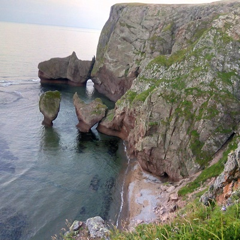
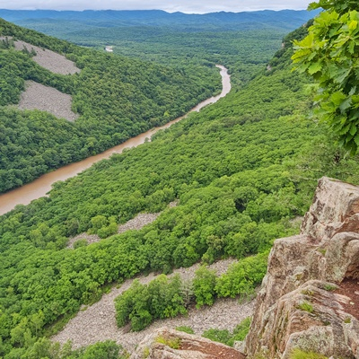

Бухта Дубовая
Расположена бухта Дубовая между двумя другими местными бухтами — южным мысом Выступ бухты Зеркальная (вблизи поселка Зеркальный) и бухтой Малая Нерпа. В бухте расположено несколько кекур с необычными названиями: «Бутылка», «Курица» и другие.
Большое фото
Рудная пристань
Мыс Бриннера представляет собой двуглавую скалу, на меньшей из вершин которой стоит маяк, построенный в начале 1950-х прикрывающем вход в крохотный порт. Главными местными достопримечательностями являются кекуры Два Брата.
Большое фото

Ущелье Дарданеллы
Уникальное природное образование имеет множество наименований: ущелье Дарданеллы, урочище Щёки, Хмельницкие Щёки, Щёки Дарданеллы. Официальное название с 1984 г. — памятник природы регионального значения Обнажение горных пород «Щеки».
Большое фото